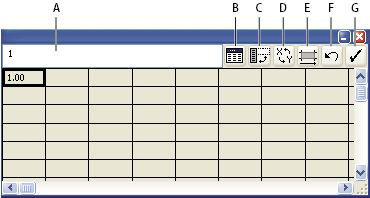

Enter graph data
You use the Graph Data window to enter the data for your graph. The Graph Data window appears automatically when you use a graph tool and stays open until you close it.

Graph data window
- A.
- Entry text box
- B.
- Import data
- C.
- Transpose row/column
- D.
- Switch x/y
- E.
- Cell style
- F.
- Revert
- G.
- Apply
- Click the Apply button
 or
press the Enter key on the numeric keypad to regenerate the graph.
or
press the Enter key on the numeric keypad to regenerate the graph.